# install.packages("tuber")
library(tuber)
library(tidyverse)Week 5 Lab
Data collection: an example using YouTube API
YouTube Data API V3
Get your YouTube Client ID and Sercret
You will need to have a Google account/gmail (e.g., RIT email).
Log in Google’s developers console to create a new project: https://console.developers.google.com/
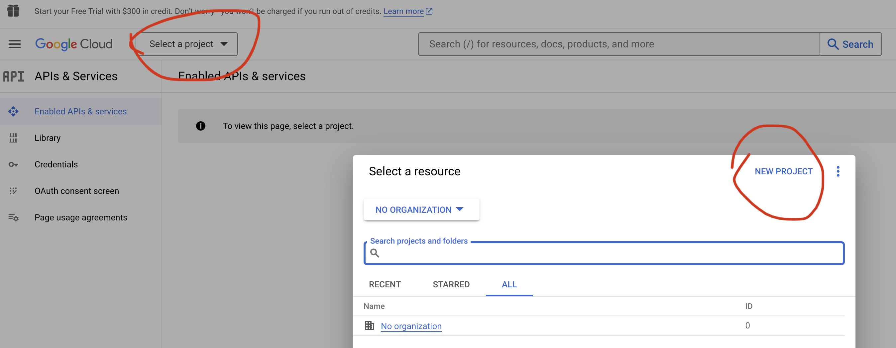
- Click “Enabled APIs & services”, search for “YouTube Data API V3” and enable it.
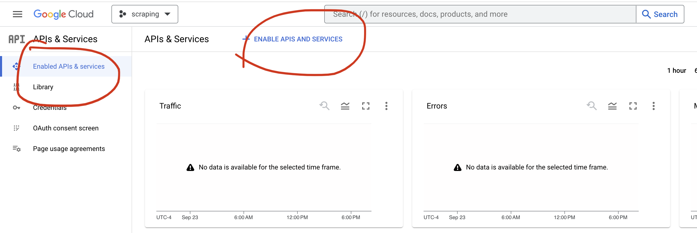 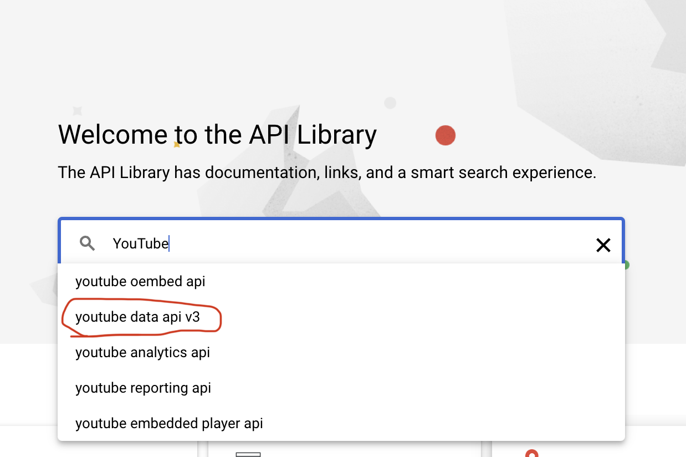 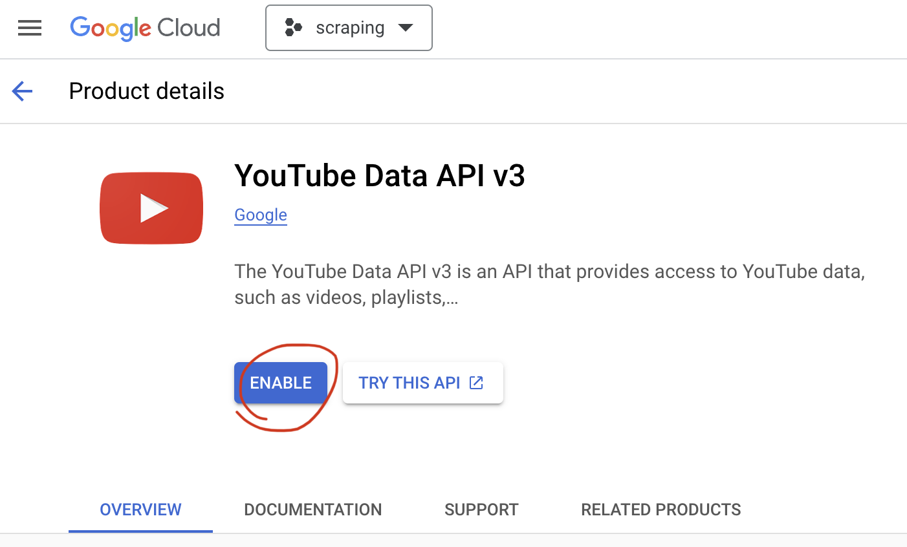
Create your API key, choose “Public data”, then restrict the API with only the YouTube Data API V3. 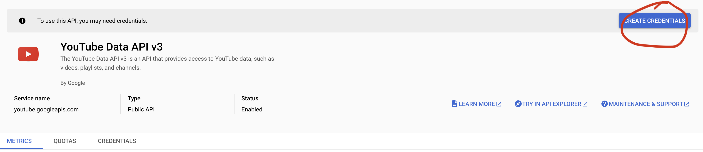 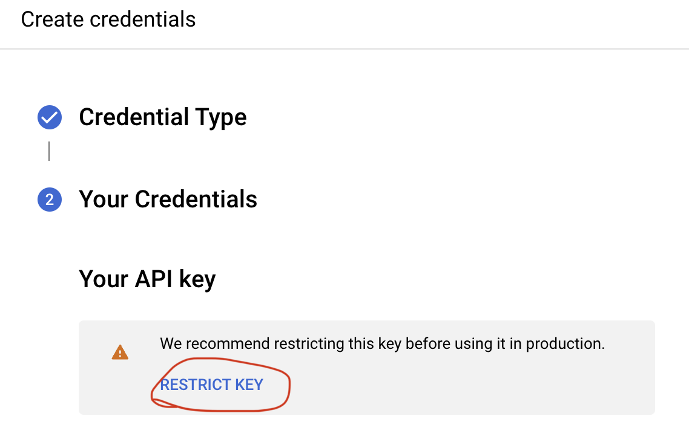 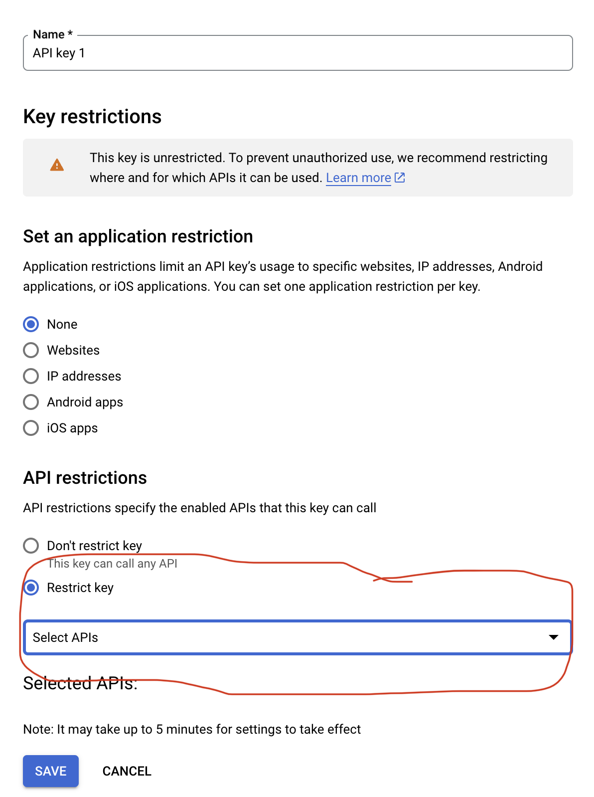
Create the credentials for your API keys. Configure your OAuth consent screen, choose internal user type (if you choose external user, extra steps for authorization might be needed), put in your email contact,then you should be able to see the client ID and secret. Copy and save it, and don’t share with others.
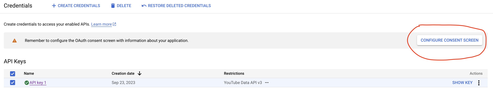 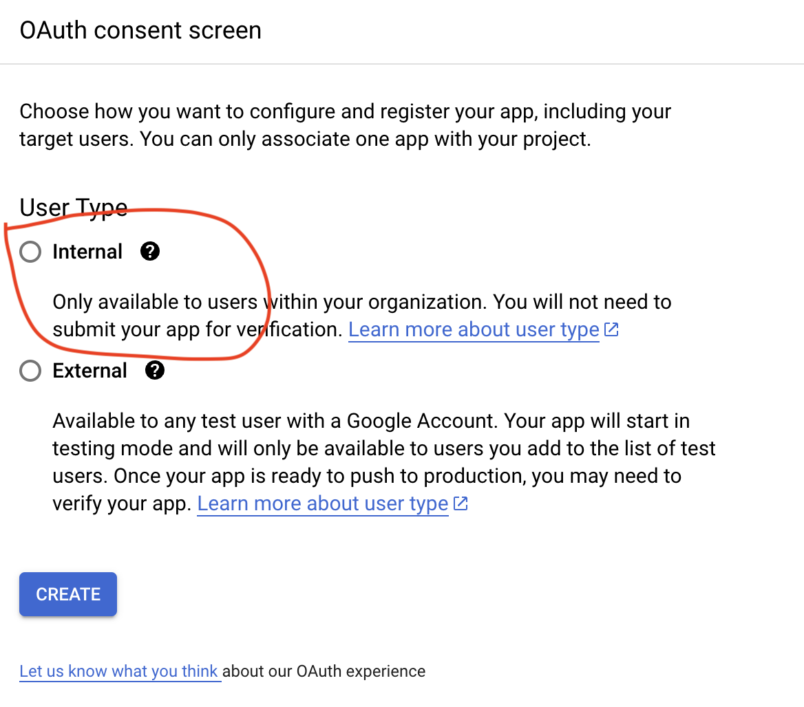 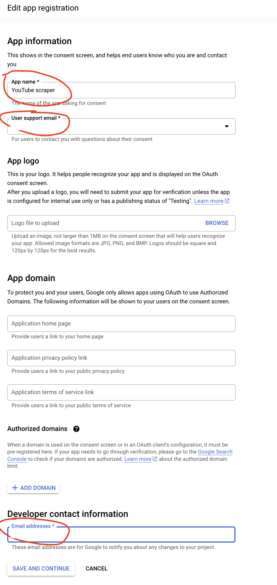 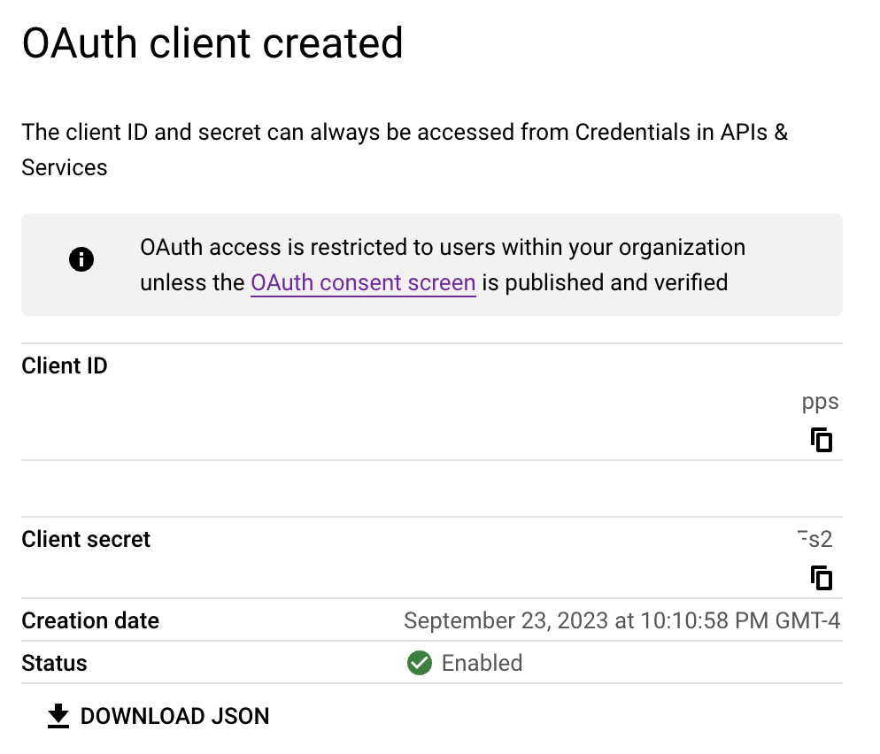
Lastly you might need to add a redirect url into your client ID. Under Cresidentials, click on the Client ID you created, then put “http://localhost:1410/” into “Authorized redirect URIs”, and save it.
Additionally, if you are making it for external usage, you might need to do an extra step for verification. Under the tab of “OAuth consent screen”, click “Publish APP”.
Download YouTube data through tuber package.
Loading package
Collecting comments from a YouTube video
Before collecting the comments, you will need the ID of the video. The ID can be identifid from the url. For instance, we are using a video titled “Exposing the Russian Military Unit Behind a Massacre in Bucha | Visual Investigations” from the New York Times channel as an example. You can find the ID for this specific video is IrGZ66uKcl0 (after v=) in the URL. 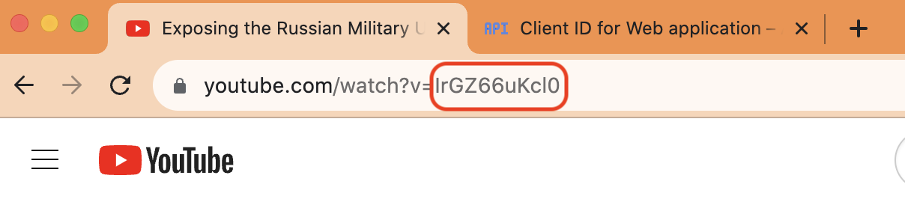
comment <- get_all_comments(video_id = "IrGZ66uKcl0")
Warning
You might run into a error message - “HTTP failure: 401” once in a while, which is highly likely due to the short expiration time for the access token. It seems that there are no systematic ways to fix it for now. But you can remove the .httr-oauth file in your working directory and re-authorize it manually again (so I would suggest you to set up the working directory before you start any project)
You can take a quick glimpse at the comments you collected. You probabbly notice that the numbers of observations are different than what you saw on the webpage. Some of them could be filtered by anti-spam bots or some other reasons related to the API. Most of the variables are pretty much self-explanatory based on their names. To be noted, parentId specifies the ID of the comment for which replies should be retrieved. In other words, if it shows NA, it is not a reply. Currently, YouTube only supports replies only for top-level comments. For more details, please refer to YouTube data API document.
Note
Typically, every API will have rate limits, which can restrict the number of times a user or client can access the server within a specified period of time. By default, YouTube data API v3 token grant rate limit is 10,000 grants per day (not necessary equal to the number of comments). You can either apply to raise the daily token limits; or switch to another API when it reaches the rate limits. 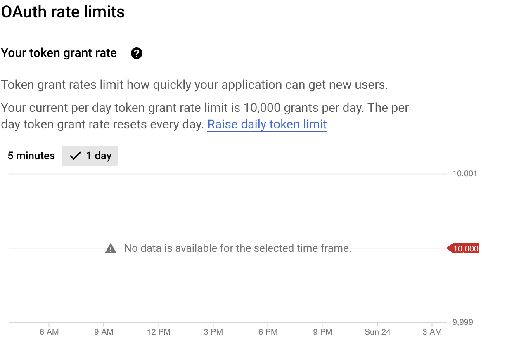
str(comment)Additionally, you can also get the statistics of the whole videos including the count of view, like, favorite, and comment. To be noted, it will be stored in a list rather than a dataframe. But we can transform it into a dataframe which might be easier to merge or analyze later.
stat <- get_stats(video_id = "IrGZ66uKcl0")
stat_df <- as.data.frame(stat)Collecting comments from a channel
First you need to identify the channel ID. You can go to the about page, click the share icon and copy channel ID. For instance, the channel ID for NYT’s channel is UCvsAa96EzubF7zNHJEzvG2g.
nytstat <- get_channel_stats("UCqnbDFdCpuN8CMEg0VuEBqA")
nytvideos = yt_search(term="", type="video", channel_id = "UCqnbDFdCpuN8CMEg0VuEBqA")In the previous chunk, we would like to collect each video ID in the channel. Then we will extract the IDs and iterate the same function get_comment_threads for each ID.
nytcomments <- lapply(as.character(nytvideos$video_id), function(x){get_comment_threads(c(video_id = x), max_results = 20)})nytcomments_df <- nytcomments %>% map_df(as_tibble)
nytcomments_df$videoId <- as.factor(nytcomments_df$videoId)
str(nytcomments_df$videoId )Similarly, you can also get the stats from every video.
nyt_videostat <- lapply(as.character(nytvideos$video_id), function(x){get_stats(c(video_id = x))})
nyt_videostat_df <- nyt_videostat %>% map_df(as_tibble)
nyt_videostat_df <- nyt_videostat_df %>% distinct(id, keep_all = T)And you can merge the video stat with the comments (for later analysis if needed)
nyt_all <- merge(nytcomments_df, nyt_videostat_df, by.x = "videoId", by.y = "id", all.x = T)Collecting comments from a list
Sometime, you might not need all the videos in a channel. Then you can collect the videos for a specific list. For instance, we are using Russia-Ukraine War playlist under the New York Times YouTube channel as an example. And you can also identify the playlist ID in the URL, and the playlist ID here is PL4CGYNsoW2iC67ssBNT-h7nTLbckKZByR.
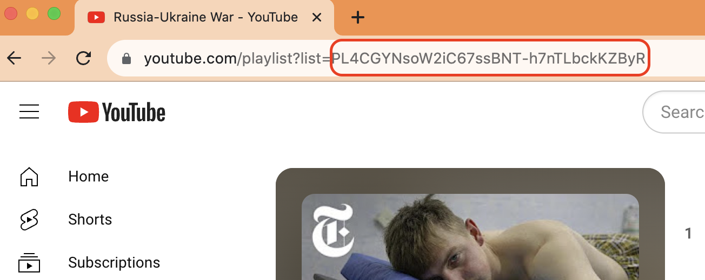
ukraine_list <- get_playlist_items(
c(playlist_id = "PL4CGYNsoW2iC67ssBNT-h7nTLbckKZByR"),
max_results = 200)ukraine_comments <- lapply(as.character(ukraine_list$contentDetails.videoId), function(x){ get_comment_threads(c(video_id = x), max_results = 100)})
ukraine_comments_df <- ukraine_comments %>%
map_df(as_tibble)ukraine_videostat <- lapply(as.character(ukraine_stat$contentDetails.videoId), function(x){get_stats(c(video_id = x))})
ukraine_videostat_df <- ukraine_videostat %>% map_df(as_tibble)